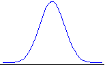
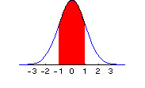
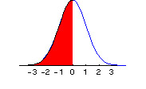
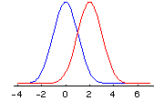
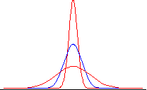

Gamblers, Zero Sets, and Fractal MountainsHenry and Thomas are flipping a fair coin and betting $1 on the outcome. If the coin comes up heads, Henry wins a dollar from Thomas. If the coin comes up tails, Thomas wins a dollar from Henry. Henry’s net winnings in dollars, then, are the total number of heads minus the total number of tails. But we saw all this before, in Part 3. If we let x(n) denote Henry’s net winnings, then x(n) is determined by the dynamical system: x(n) = x(n) + 1, with probability p = ½ The graph of 10,000 coin tosses in Part 3 simply shows the fluctuations in Henry’s wealth (starting from 0) over the course of the 10,000 coin tosses. Let’s do this in real time, although we will restrict ourselves to 3200 coin tosses. Let’s plot Henry’s winnings for a new game that lasts for 3200 flips of the coin. You can quickly see the results of many games with a few clicks of your mouse. Make sure Java is enabled on your web browser, and click here. There are three things to note about this demonstration:
Since we will later be discussing motions that are not Brownian, and distributions that are not normal (not Gaussian), it is important to first point out an aspect of all this that is somewhat independent of the probability distribution. It’s called the Gambler’s Ruin Problem. You don’t need nonnormal distributions to encounter gambler's ruin. Normal ones will do just fine. Futures Trading and the Gambler’s Ruin Problem
This section explains how casinos make most of their money, as well as why the traders at Goldman Sachs make more money speculating than you do. It’s not necessarily because they are smarter than you. It’s because they have more money. (However, we will show how the well-heeled can easily lose this advantage.)
Many people assume that the futures price of a stock index, bond, foreign currency, or commodity like gold represents a fair bet. That is, they assume that the probability of an upward movement in the futures price is equal to the probability of a downward movement, and hence the mathematical expectation of a gain or loss is zero. They use the analogy of flipping a fair coin. If you bet $1 on the outcome of the flip, the probability of your winning $1 is one-half, while the probability of losing $1 is also one-half. Your expected gain or loss is zero. For the same reason, they conclude, futures gains and futures losses will tend to offset each other in the long run. There is a hidden fallacy in such reasoning. Taking open positions in futures contracts is not analogous to a single flip of a coin. Rather, the correct analogy is that of a repeated series of coin flips with a stochastic termination point. Why? Because of limited capital. Suppose you are flipping a coin with a friend and betting $1 on the outcome of each flip. At some point either you or your friend will have a run of bad luck and will lose several dollars in succession. If one player has run out of money, the game will come to an end. The same is true in the futures market. If you have a string of losses on a futures position, you will have to post more margin. If at some point you cannot post the required margin, you will have to close out the contract. You are forced out of the game, and thus you cannot win back what you lost. In a similar way, in 1974, Franklin National and Bankhaus I. D. Herstatt had a string of losses on their interbank foreign exchange trading positions. They did not break even in the long run because there was no long run. They went broke in the intermediate run. This phenomenon is referred to in probability theory as the gambler's ruin problem [1]. What is a "fair" bet when viewed as a single flip of the coin, is, when viewed as a series of flips with a stochastic ending point, really a different game entirely whose odds are quite different. The probabilities of the game then depend on the relative amounts of capital held by the different players. Suppose we consider a betting process in which you will win $1 with probability p and lose $1 with probability q (where q = 1 - p). You start off with an amount of $W. If your money drops to zero, the game stops. Your betting partner—the person on the other side of your bet who wins when you lose and loses when you win—has an amount of money $R. What is the probability you will eventually lose all of your wealth W, given p and R? From probability theory [1] the answer is:
(q/p)W + R - (q/p)W
Ruin probability = ——————————————————, for p ¹ q
(q/p)W + R - 1
An Example You have $10 and your friend has $100. You flip a fair coin. If heads comes up, he pays you $1. If tails comes up, you pay him $1. The game ends when either player runs out of money. What is the probability your friend will end up with all of your money? From the second equation above, we have p = q = .5, W = $10, and R = $100. Thus the probability of your losing everything is: 1 - (10/(10 + 100)) =.909. You will lose all of your money with 91 percent probability in this supposedly "fair" game. Now you know how casinos make money. Their bank account is bigger than yours. Eventually you will have a losing streak, and then you will have to stop playing (since the casinos will not loan you infinite capital). The gambler’s ruin odds are the important ones. True, the odds are stacked against the player in each casino game: heavily against the player for kino, moderately against the player for slots, marginally against the player for blackjack and craps. (Rules such as "you can only double down on 10s and 11s" in blackjack are intended to turn the odds against the player, as are the use of multiple card decks, etc.) But the chief source of casino winnings is that people have to stop playing once they’ve had a sufficiently large losing streak, which is inevitable. (Lots of "free" drinks served to the players help out in this process. From the casino’s point of view, the investment in free drinks plays off splendidly.) Note here that "wealth" (W or R in the equation) is defined as the number of betting units: $1 in the example. The more betting units you have, the less probability there is you will be hit with the gambler’s ruin problem. So you if you sit at the blackjack table at Harrah’s with a $1000 minimum bet, you will need to have 100 times the total betting capital of someone who sits at the $10 minimum tables, in order to have the same odds vis-à-vis the dealer. A person who has $1000 in capital and bets $10 at a time has a total of W = 1000/10 = 100 betting units. That’s a fairly good ratio. While a person who has $10,000 in capital and bets $1000 at a time has W = 10000/1000 = 10 betting units. That’s lousy odds, no matter the game. It’s loser odds. Gauss vs. Cauchy We measure probability with our one-pound jar of jam. We can distribute the jam in any way we wish. If we put it all at the point x = 5, then we say "x = 5 with certainty" or "x = 5 with probability 1." Sometimes the way the jam is distributed is determined by a simple function. The normal or Gaussian distribution distributes the jam (probability) across the real line (from minus infinity to plus infinity) using the density function: f(x) = [1/(2p )0.5] exp(-x2/2) , - ¥ < x < ¥ Here f(x) creates the nice bell-shaped curve we have seen before (x is on the horizontal line, and f(x) is the blue curve above it):  The jam (probability) is smeared between the horizontal line and the curve, so the height of the curve at each point (given by f(x)) indicates that point’s probability relative to some other point. The curve f(x) is called the probability density. So we can calculate the probability density for each value of x using the function f(x). Here are some values:
At the center value of x = 0, the probability density is highest, and has a value of f(x) = .3989. Around 0, the probability density is spread out symmetrically in each direction. The entire one-pound jar of jam is smeared underneath the curve between – ¥ and + ¥ . So the total probability, the total area under the curve, is 1. In calculus the area under the curve is written as an integral, and since the total probability is one, the integral from - ¥ to + ¥ of the jam-spreading function f(x) is 1. The probability that x lies between a and b, a < x < b, is just the area under the curve (the amount of jam) measured from a to b, as indicated by the red portion in the graphic below, where a = -1 and b = +1:  Instead of writing this integral in the usual mathematical fashion, which requires using a graphic in the html world of your web browser, I will simply denote the integral from a to b of f(x) as: I(a,b) f(x) dx. I(a,b) f(x) dx, then, is the area under the f(x) curve from a to b. In the graphic above, we see pictured I(-1,1). And since the total probability (total area under the curve) across all values of x ( from - ¥ to + ¥ ) is 1, we have I(- ¥ ,¥ ) f(x) dx = 1. A little more notation will be useful. We want a shorthand way of expressing the probability that x < b. But the probability that x < b is the same as the probability that -¥ < x < b. So this value is given by the area under the curve from -¥ to b. We will write this as F(b): F(b) = I(-¥ ,b) f(x) dx = area under curve from minus infinity to b. Here is a picture of F(b) when b = 0:  For any value x, F(x) is the cumulative probability function. It represents the total probability up to (and including) point x. It represents the probability of all values smaller than (or equal to) x. (Note that since the area under the curve at a single point is zero, whether we include the point x itself in the cumulative probability function F(x), or whether we only include all points less than x, does not change the value of F(x). However, our understanding will be that the point x itself is included in the calculation of F(x).) F(x) takes values between 0 and 1, corresponding to our one-pound jar of jam. Hence F(-¥ ) = 0, while F(+¥ ) = 1. The probability between a and b, a <x < b, then, can be written simply as F(b) – F(a). The probability x > b can be written as: 1 – F(b). Now. Here is a different function for spreading probability, called the Cauchy density: g(x) = 1/[p (1 + x2)], - ¥ < x < ¥ Here is a picture of the resulting Cauchy curve:
It it nice and symmetric like the normal distribution, but is relatively more concentrated around the center, and taller in the tails than the normal distribution. We can see this more clearly by looking at the values for g(x):
At every value of x, the Cauchy density is lower than the normal density, until we get out into the extreme tails, such as 2 or 3 (+ or -). Note that at –3, for example, the probability density of the Cauchy distribution is g(-3) = .0318, while for the normal distribution, the value is f(-3) = .0044. There is more than 7 times as much probability for this extreme value with the Cauchy distribution than there is with the normal distribution! (The calculation is .0318/.0044 = 7.2.) Relative to the normal, the Cauchy distribution is fat-tailed. To see a more detailed plot of the normal density minus the Cauchy density, make sure Java is enabled on your web browser and click here. As we will see later, there are other distributions that have more probability in the tails than the normal, and also more probability at the peak (in this case, around 0). But since the total probability must add up to 1, there is, of course, less probability in the intermediate ranges. Such distributions are called leptokurtic. Leptokurtic distributions have more probability both in the tails and in the center than does the normal distribution, and are to be found in all asset markets—in foreign exchange, shares of stock, interest rates, and commodity prices. (People who pretend that the empirical distributions of changes in log prices in these markets are normal, rather than leptokurtic, are sadly deceiving themselves.) Location and Scale So far, as we have looked at the normal and the Cauchy densities, we have seen they are centered around zero. However, since the density is defined for all values of x, - ¥ < x < ¥ , the center can be elsewhere. To move the center from zero to a location m, we write the normal probability density as: f(x) = [1/(2p )0.5] exp(-(x-m)2/2) , - ¥ < x < ¥ . Here is a picture of the normal distribution after the location has been moved from m = 0 (the blue curve) to m = 2 (the red curve):  For the Cauchy density, the corresponding alteration to include a location parameter m is: g(x) = 1/[p (1 + (x-m)2)], - ¥ < x < ¥ In each case, the distribution is now centered at m, instead of at 0. Note that I say "location paramter m" and not "mean m". The reason is simple. For the Cauchy distribution, a mean doesn’t exist. But a location parameter, which shows where the probability distribution is centered, does. For the normal distribution, the location parameter m is the same as the mean of the distribution. Thus a lot of people who are only familiar with the normal distribution confuse the two. They are not the same. Similarly, for the Cauchy distribution the standard deviation (or the variance, which is the square of the standard deviation) doesn’t exist. But there is a scale parameter c that shows how far you have to move in each direction from the location parameter m, in order for the area under the curve to correspond to a given probability. For the normal distribution, the scale parameter c corresponds to the standard deviation. But a scale parameter c is defined for the Cauchy and for other, leptokurtic distributions for which the variance and standard deviation don’t exist ("are infinite"). Here is the normal density written with the addition of a scale parameter c: f(x) = [1/(c (2p )0.5)] exp(-((x-m)/c)2/2) , - ¥ < x < ¥ . We divide (x-m) by c, and also multiply the entire density function by the reciprocal of c. Here is a picture of the normal distribution for difference values of c:  The blue curve represents c = 1, while the peaked red curves has c < 1, and the flattened red curve has c > 1. For the Cauchy density, the addition of a scale parameter gives us: g(x) = 1/[cp (1 + ((x-m)/c)2)], - ¥ < x < ¥ Just as we did with the normal distribution, we divide (x-m) by c, and also multiply the entire density by the reciprocal of c. Operations with location and scale are well-defined, whether or not the mean or the variance exist. Most of the probability distributions we are interested in in finance lie somewhere between the normal and the Cauchy. These two distributions form the "boundaries", so to speak, of our main area of interest. Just as the Sierpinski carpet has a Hausdorff dimension that is a fraction which is greater than its topological dimension of 1, but less than its Euclidean dimension of 2, so do the probability distributions in which we are chiefly interested have a dimension that is greater than the Cauchy dimension of 1, but less than the normal dimension of 2. (What is meant here by the "Cauchy dimension of 1" and the "normal dimension of 2" will be clarified as we go along.) Notes [1] See Chapter 14 in William Feller, An Introduction to Probability Theory and Its Applications, Vol. I, 3rd ed., John Wiley & Sons, New York, 1968. J. Orlin Grabbe is the author of International Financial Markets, and is an internationally recognized derivatives expert. He has recently branched out into cryptology, banking security, and digital cash. His home page is located at http://www.aci.net/kalliste/homepage.html .
|